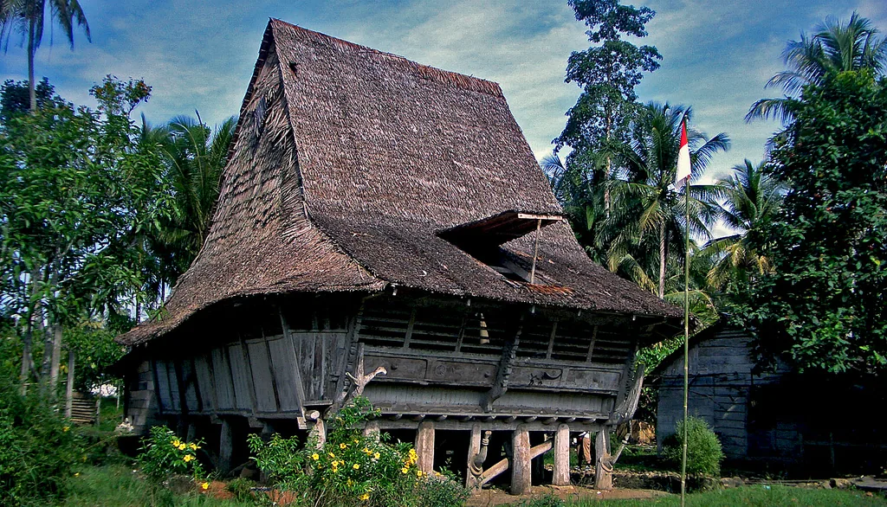

Nias Heritage (Ondröita Nono Niha) is a curated digital repository dedicated to preserving, documenting, and showcasing the rich history, oral traditions, cultural artifacts, literature, and language of Nias Island, Indonesia. Warisan Nias (Ondröita Nono Niha) adalah repositori digital terkurasi yang didedikasikan untuk melestarikan, mendokumentasikan, dan menampilkan sejarah, tradisi lisan, artefak budaya, literatur, dan bahasa Nias, Indonesia.


Explore Nias literature, proverbs, traditional architecture, dances, and ancient history. Jelajahi literatur, pepatah, arsitektur tradisional, tarian, dan sejarah kuno Nias.
Detailed exhibitions on traditional houses (Omo Niha), megalithic stone carvings (Behu), ritual dances (Maena, Fatele, Fahombo), bark garments (Baru Oholu), hilltop villages, genetic ancestry, and 12,000 years of Nias history. Pameran mendalam tentang rumah tradisional (Omo Niha), monumen batu megalit (Behu), tarian ritual & lompat batu (Maena, Fatele, Fahombo), pakaian kulit kayu (Baru Oholu), desa adat, serta 12.000 tahun sejarah Nias.
Browse over 740+ traditional Nias proverbs and wise sayings (Amaedola), complete with Nias meanings (Eluaha), Indonesian and English translations, instant search, and letter filter. Jelajahi lebih dari 740+ pepatah dan perumpamaan Nias (Amaedola) lengkap dengan makna (Eluaha), terjemahan Indonesia & Inggris, fitur pencarian cepat, serta filter abjad.
Access the complete Nias Holy Bible (Old & New Testaments) with intuitive book navigation, chapter viewer, verse reader, and cross-references. Akses Kitab Suci Bahasa Nias lengkap (Perjanjian Lama & Baru) dengan navigasi kitab, pembaca pasal, ayat, dan referensi silang.
Seamlessly switch the user interface and content definitions between Nias (Li Niha), Indonesian (Bahasa Indonesia), and English. Beralih dengan mudah antara bahasa Nias (Li Niha), Bahasa Indonesia, dan Bahasa Inggris pada antarmuka aplikasi dan teks penjelasan.
Pre-seeded local database paired with built-in live MediaWiki API synchronization that checks and updates proofread articles directly from Nias Wikibooks. Basis data lokal pra-isi yang dilengkapi mesin penyinkron otomatis untuk memeriksa dan memperbarui suntingan artikel terbaru langsung dari Wikibooks Nias.
Fully responsive design tailored for mobile phones (Android), tablets, and desktop operating systems (Linux & Windows). Desain responsif yang disesuaikan secara optimal untuk smartphone (Android), tablet, dan komputer desktop (Linux & Windows).
Built as a non-profit digital cultural initiative, Nias Heritage connects generations by combining ancient oral poetry (Hoho), folklores (Manö-manö), traditional chants (Sinunö), and historic monuments into an accessible mobile platform. Dibuat sebagai inisiatif budaya digital nirlaba, Warisan Nias menghubungkan antargenerasi dengan memadukan puisi lisan kuno (Hoho), dongeng rakyat (Manö-manö), nyanyian tradisional (Sinunö), dan monumen bersejarah dalam satu platform mobile yang mudah diakses.